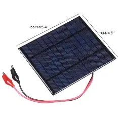
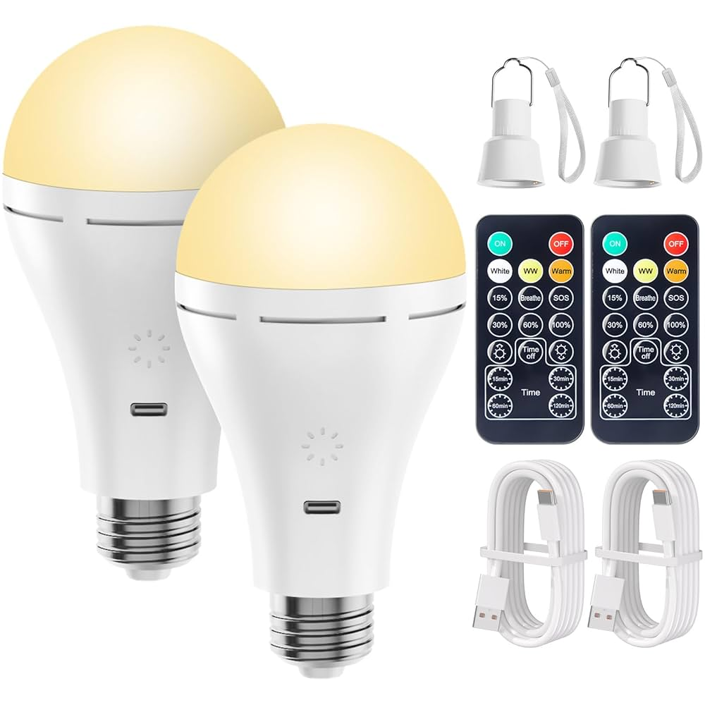
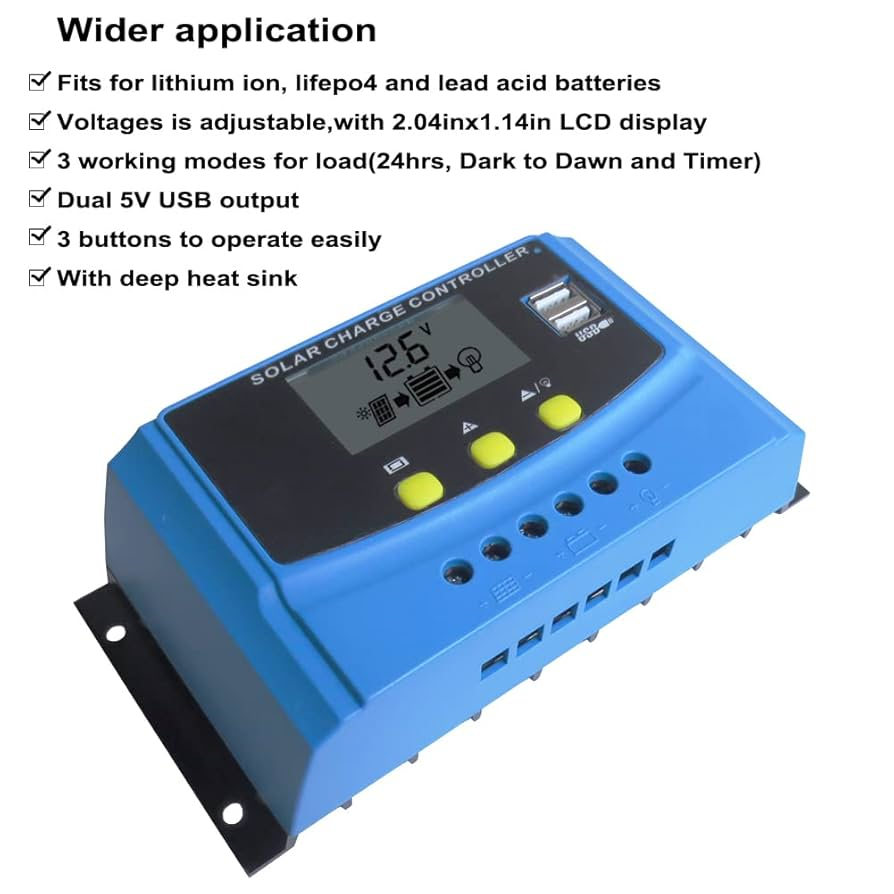

The Simple DIY Solar Lamp is a low-cost, portable lighting solution designed for rural and mountainous areas lacking reliable electricity. Powered by a small solar panel and rechargeable battery, it provides safe, bright, and sustainable light for students and farmers, replacing hazardous kerosene lamps. The project combines renewable energy technology with community needs to improve education, productivity, and health while reducing emissions. Future developments include adding USB charging, adjustable brightness, and more durable, energy-efficient designs for broader rural use.
IV. RESEARCH PROCESS
Step 1: Needs Assessment
The first step involved identifying the lighting challenges in mountainous areas. Information was collected from secondary sources and through direct communication with local communities. This step confirmed that kerosene lamps are still widely used, and that a solar-powered lamp would be highly beneficial.
Step 2: Component Selection
Based on research and expert advice, suitable components were chosen:
-
Solar panels capable of generating 5–10 watts under standard sunlight conditions.
 - Lithium-ion batteries with a storage capacity sufficient for 6–8 hours of continuous lighting.
-
LED bulbs with high luminous efficacy (around 100–120 lumens per watt) and color temperature suitable for studying
 -
A simple charge controller to regulate voltage and prevent battery damage.

Step 3: Design and Modeling
The lamp was designed to be compact and portable. 3D modeling software (such as SolidWorks) was used to visualize the structure, ensuring stability and ergonomics. The design emphasized ease of assembly, lightweight materials, and durability under rural conditions.
Step 4: Prototyping and Testing
Several prototypes were assembled and tested under laboratory conditions and then in outdoor environments. Measurements included charging time, light output, battery life, and resilience to dust and humidity. Results were documented and used to refine the design.
Step 5: Field Trials
A small number of lamps were distributed to families in mountainous areas for trial use. Feedback was collected regarding usability, brightness, and convenience. Users appreciated the stable light source, the portability, and the reduced dependence on kerosene. Some suggestions included adding a mobile charging port and improving the angle adjustment of the lamp head.